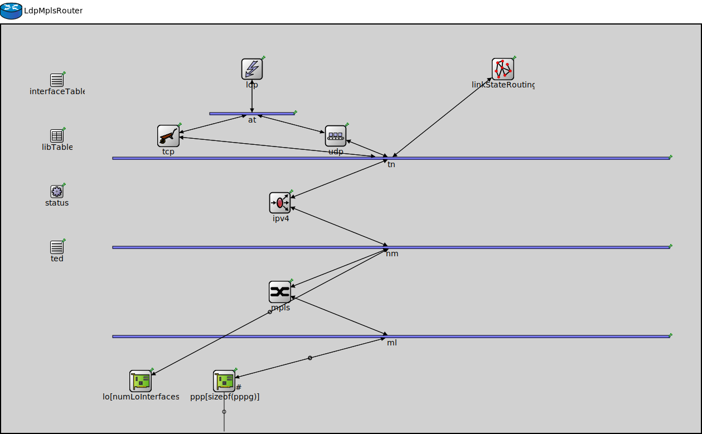

Package: inet.node.mpls
LdpMplsRouter
compound moduleAn LDP-capable router.
LDP Capable Routers are the main building blocks for an LDP MPLS network.
Usage diagram
The following diagram shows usage relationships between types. Unresolved types are missing from the diagram.
Used in
| Name | Type | Description |
|---|---|---|
| LDPTEST | network | (no description) |
Parameters
| Name | Type | Default value | Description |
|---|---|---|---|
| hasStatus | bool | false | |
| holdTime | double | 15s | |
| helloInterval | double | 5s | |
| numLoInterfaces | int | 1 | |
| peers | string | ||
| routerId | string | "auto" |
Properties
| Name | Value | Description |
|---|---|---|
| networkNode | ||
| labels | node | |
| display | i=abstract/router |
Gates
| Name | Direction | Size | Description |
|---|---|---|---|
| pppg [ ] | inout |
Unassigned submodule parameters
| Name | Type | Default value | Description |
|---|---|---|---|
| status.initialStatus | string | "UP" |
TODO @signal, @statistic |
| interfaceTable.displayAddresses | bool | false |
whether to display IP addresses on links |
| ldp.interfaceTableModule | string |
The path to the InterfaceTable module |
|
| ldp.routingTableModule | string | ||
| ldp.libTableModule | string | ||
| ldp.tedModule | string | ||
| ldp.stopOperationExtraTime | double | -1s |
extra time after lifecycle stop operation finished |
| ldp.stopOperationTimeout | double | 2s |
timeout value for lifecycle stop operation |
| at.displayStringTextFormat | string | "processed %p pk (%l)" |
determines the text that is written on top of the submodule |
| at.forwardServiceRegistration | bool | true | |
| at.forwardProtocolRegistration | bool | true | |
| ted.interfaceTableModule | string |
The path to the InterfaceTable module |
|
| ted.routingTableModule | string | ||
| linkStateRouting.interfaceTableModule | string |
The path to the InterfaceTable module |
|
| linkStateRouting.routingTableModule | string | ||
| linkStateRouting.tedModule | string | ||
| tn.displayStringTextFormat | string | "processed %p pk (%l)" |
determines the text that is written on top of the submodule |
| tn.forwardServiceRegistration | bool | true | |
| tn.forwardProtocolRegistration | bool | true | |
| ipv4.routingTable.interfaceTableModule | string |
The path to the InterfaceTable module |
|
| ipv4.routingTable.routerId | string | "auto" |
for routers, the router id using IPv4 address dotted notation; specify "auto" to select the highest interface address; should be left empty ("") for hosts |
| ipv4.routingTable.netmaskRoutes | string | "*" |
maintain netmask routes for interfaces |
| ipv4.routingTable.forwarding | bool | true |
turns IP forwarding on/off |
| ipv4.routingTable.multicastForwarding | bool | false |
turns multicast forwarding on/off |
| ipv4.routingTable.useAdminDist | bool | false |
Use Cisco like administrative distances |
| ipv4.routingTable.routingFile | string | "" |
routing table file name |
| ipv4.natTable.networkProtocolModule | string | "^.ip" | |
| ipv4.natTable.config | xml | xml(" |
XML configuration parameters for network address translation |
| ipv4.up.displayStringTextFormat | string | "processed %p pk (%l)" |
determines the text that is written on top of the submodule |
| ipv4.up.forwardServiceRegistration | bool | true | |
| ipv4.up.forwardProtocolRegistration | bool | true | |
| ipv4.icmp.interfaceTableModule | string |
The path to the InterfaceTable module |
|
| ipv4.icmp.routingTableModule | string | ||
| ipv4.icmp.crcMode | string | "declared" | |
| ipv4.icmp.quoteLength | int | 8B |
Number of bytes from original packet to quote in ICMP reply |
| ipv4.mp.displayStringTextFormat | string | "processed %p pk (%l)" |
determines the text that is written on top of the submodule |
| ipv4.mp.forwardServiceRegistration | bool | true | |
| ipv4.mp.forwardProtocolRegistration | bool | true | |
| ipv4.lp.displayStringTextFormat | string | "processed %p pk (%l)" |
determines the text that is written on top of the submodule |
| ipv4.lp.forwardServiceRegistration | bool | true | |
| ipv4.lp.forwardProtocolRegistration | bool | true | |
| nm.displayStringTextFormat | string | "processed %p pk (%l)" |
determines the text that is written on top of the submodule |
| nm.forwardServiceRegistration | bool | true | |
| nm.forwardProtocolRegistration | bool | true | |
| mpls.interfaceTableModule | string |
The path to the InterfaceTable module |
|
| mpls.libTableModule | string | ||
| libTable.config | xml | xml(" |
table contents to be loaded on startup |
| ml.displayStringTextFormat | string | "processed %p pk (%l)" |
determines the text that is written on top of the submodule |
| ml.forwardServiceRegistration | bool | true | |
| ml.forwardProtocolRegistration | bool | true |
Source code
// // An LDP-capable router. // // LDP Capable Routers are the main building blocks for an LDP MPLS network. // module LdpMplsRouter { parameters: @networkNode(); @labels(node); @display("i=abstract/router"); bool hasStatus = default(false); double holdTime @unit(s) = default(15s); double helloInterval @unit(s) = default(5s); int numLoInterfaces = default(1); string peers; string routerId = default("auto"); *.forwarding = true; *.routingTable.routerId = this.routerId; *.interfaceTableModule = default(absPath(".interfaceTable")); *.routingTableModule = default(absPath(".ipv4.routingTable")); *.tedModule = default(absPath(".ted")); *.libTableModule = default(absPath(".libTable")); gates: inout pppg[] @labels(PppFrame-conn); submodules: status: NodeStatus if hasStatus { @display("p=100,300;is=s"); } interfaceTable: InterfaceTable { parameters: @display("p=100,100;is=s"); } ldp: Ldp { parameters: holdTime = parent.holdTime; helloInterval = parent.helloInterval; @display("p=450,80"); } at: MessageDispatcher { parameters: @display("p=450,160;b=153,5,,,,1"); } ted: Ted { parameters: @display("p=100,400;is=s"); } linkStateRouting: LinkStateRouting { parameters: peers = parent.peers; @display("p=900,80"); } tcp: <default(firstAvailable("Tcp","TcpLwip","TcpNsc"))> like ITcp { parameters: @display("p=300,200"); } udp: <default(firstAvailable("Udp"))> like IUdp { parameters: @display("p=600,200"); } tn: MessageDispatcher { parameters: @display("p=700,240;b=1000,5,,,,1"); } ipv4: Ipv4NetworkLayer { parameters: @display("p=500,320"); } nm: MessageDispatcher { parameters: @display("p=700,400;b=1000,5,,,,1"); } lo[numLoInterfaces]: <default("LoopbackInterface")> like ILoopbackInterface { @display("p=250,640"); } ppp[sizeof(pppg)]: <default("PppInterface")> like IPppInterface { parameters: @display("p=400,640,row,150;q=l2queue"); } mpls: Mpls { parameters: //peers = parent.peers; classifierModule = "^.ldp"; @display("p=500,480"); } libTable: LibTable { parameters: @display("p=100,200;is=s"); } ml: MessageDispatcher { parameters: @display("p=700,560;b=1000,5,,,,1"); } connections allowunconnected: linkStateRouting.ipOut --> tn.in++; tn.out++ --> linkStateRouting.ipIn; ldp.socketIn <-- at.out++; ldp.socketOut --> at.in++; at.out++ --> udp.appIn; at.in++ <-- udp.appOut; at.out++ --> tcp.appIn; at.in++ <-- tcp.appOut; udp.ipOut --> tn.in++; tn.out++ --> udp.ipIn; tcp.ipOut --> tn.in++; tn.out++ --> tcp.ipIn; for i=0..numLoInterfaces-1 { lo[i].upperLayerOut --> nm.in++; nm.out++ --> lo[i].upperLayerIn; } for i=0..sizeof(pppg)-1 { pppg[i] <--> ppp[i].phys; ppp[i].upperLayerOut --> ml.in++; ml.out++ --> ppp[i].upperLayerIn; } ipv4.transportOut --> tn.in++; tn.out++ --> ipv4.transportIn; ipv4.ifOut --> nm.in++; nm.out++ --> ipv4.ifIn; nm.out++ --> mpls.netwIn; mpls.netwOut --> nm.in++; mpls.ifOut --> ml.in++; ml.out++ --> mpls.ifIn; }File: src/inet/node/mpls/LdpMplsRouter.ned
 This documentation is released under the Creative Commons license
This documentation is released under the Creative Commons license